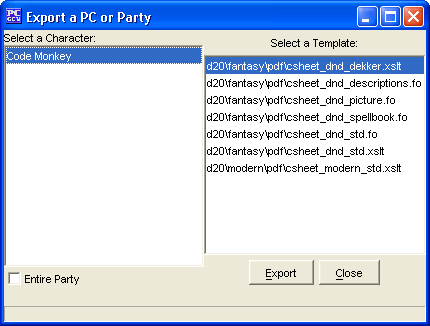

This option will export your characters to a Portable Document Format file with the .PDF file extension. Please make sure you have a valid application to view it, such as Adobe's Acrobat Reader.
The
to PDF
selection opens up a pop up window
which prompts the user to select how to export open
characters.
On the left you can choose either one open character to export, or
check the "Entire party" checkbox to export all open
characters.
Then you select which Output Sheet template is to be used to export
the character on the right.
Once both have been selected, click the 'Export' button and PCGen
will export the character to a file in a folder chosen by the user
(PCGen's Character directory by default) using the name of the
character as a filename.
When finished press the 'Close' button.
NOTE: HTML tags used in the 'Character Notes' will not function properly when exporting the character sheet to PDF.
For more information on the PDF Output Sheets, please see the PDF Sheets section